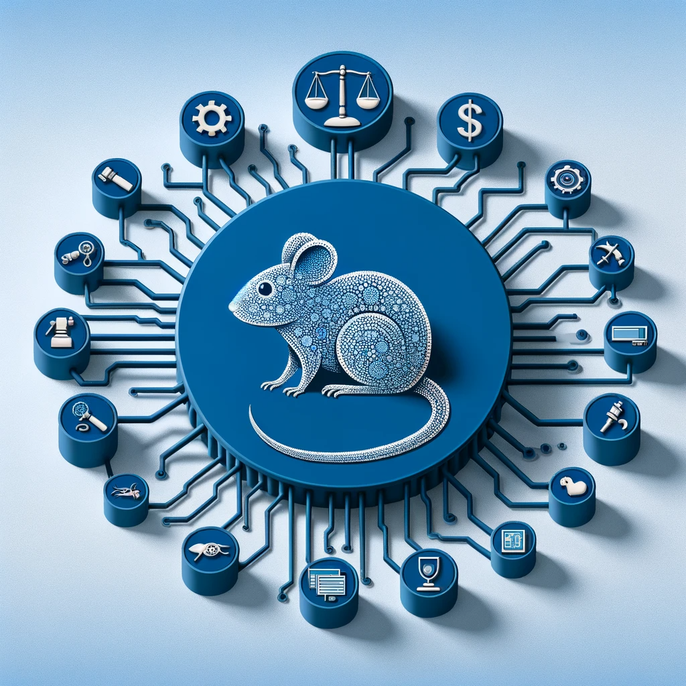
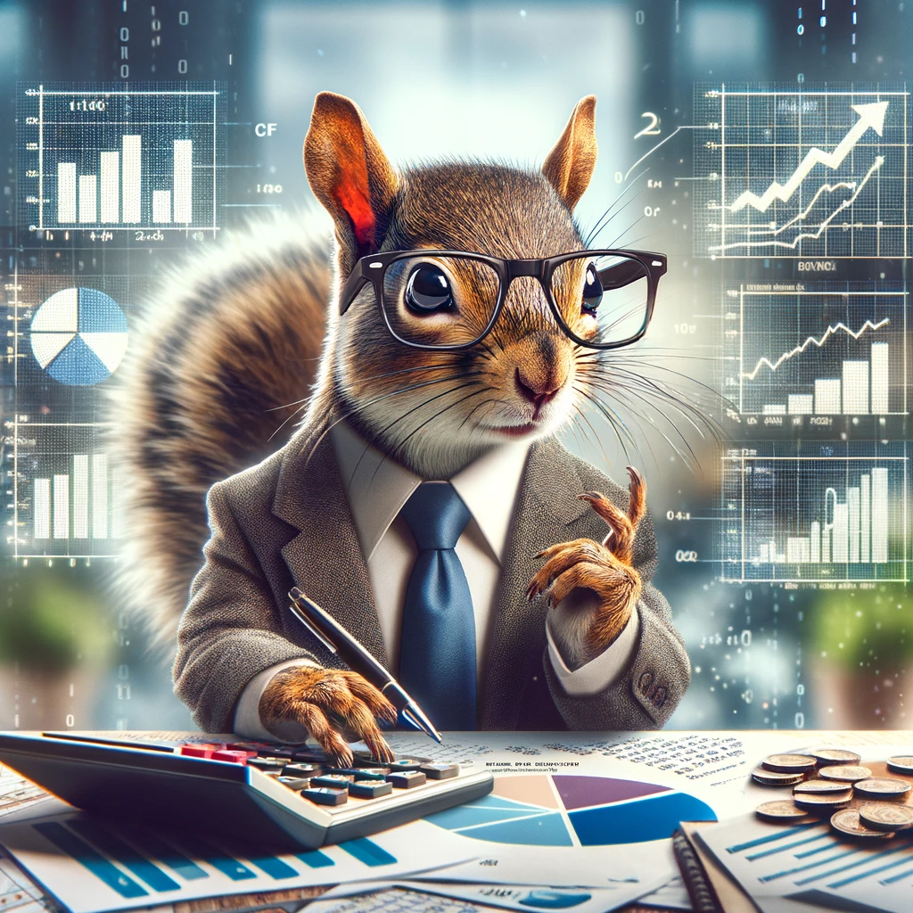
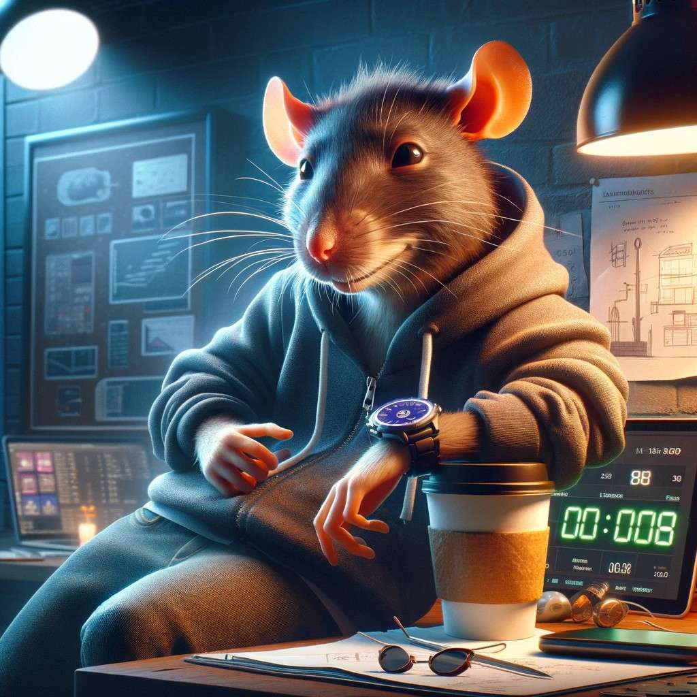
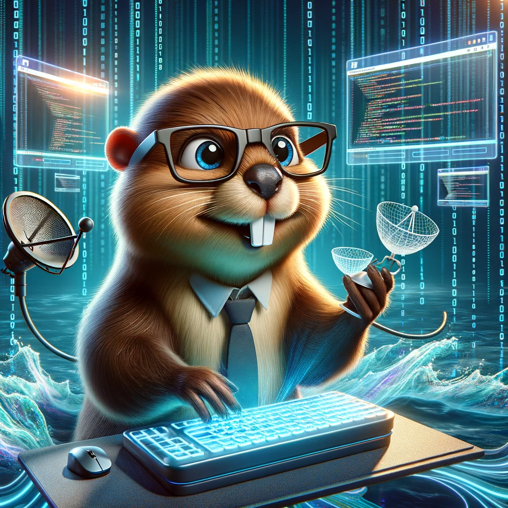

Innovate and Accelerate with Web Rodent
Unleashing the Power of Generative AI in Every Code Line
About Us
Welcome to Web Rodent, where each project is an adventure, and every code commit tells a story of innovation. Meet the masterminds behind our mission:
Mats, the CFO Squirrel
With acumen as sharp as his teeth, Mats is the financial guru who juggles numbers as easily as he does acorns. His vision for economic growth is as vast as the forests he once called home.
Ruben, the COO Rat
Ruben is the organizational wizard, orchestrating operations with a maestro's precision. From the labyrinthine alleys of strategy to the granaries of execution, he ensures every cheese is accounted for.
Øyvind, the CEO Beaver
At the helm is Øyvind, our CEO Beaver whose engineering mind is as formidable as the dams he designs. In the stream of data, he sees the ebb and flow of opportunities, building digital infrastructures that stand the test of time.
Contact Us
Got a project in mind? Want to collaborate? Or just say hi? We're all ears (and tails)! Reach out to us, and let's make something amazing together.
Explore our projects and contributions on GitHub.
Or drop us a line at hi@webrodent.com. We're excited to hear from you!
Join the conversation in our Slack community at Web Rodent Nest. For access, please request an invitation by emailing us or through our GitHub page.